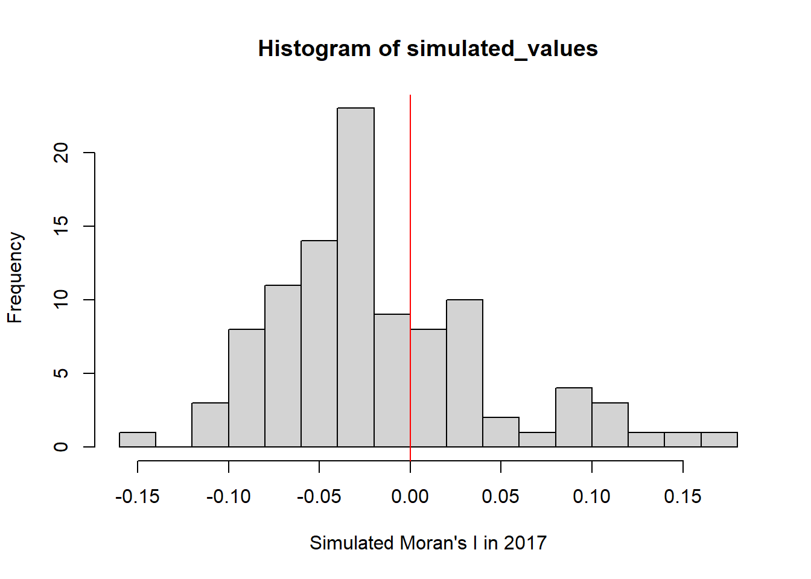
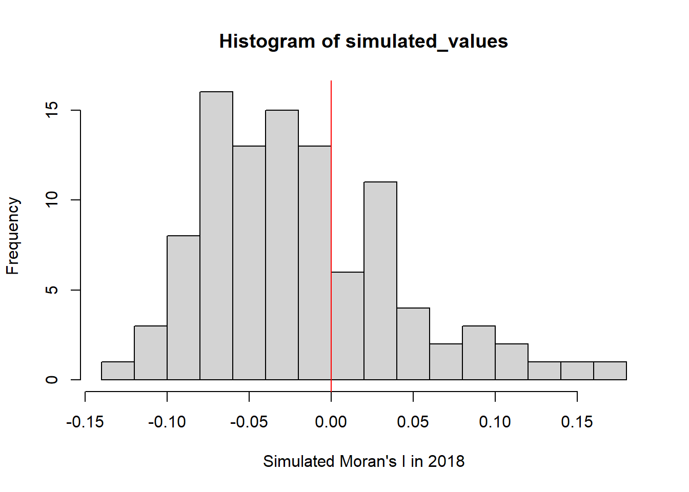
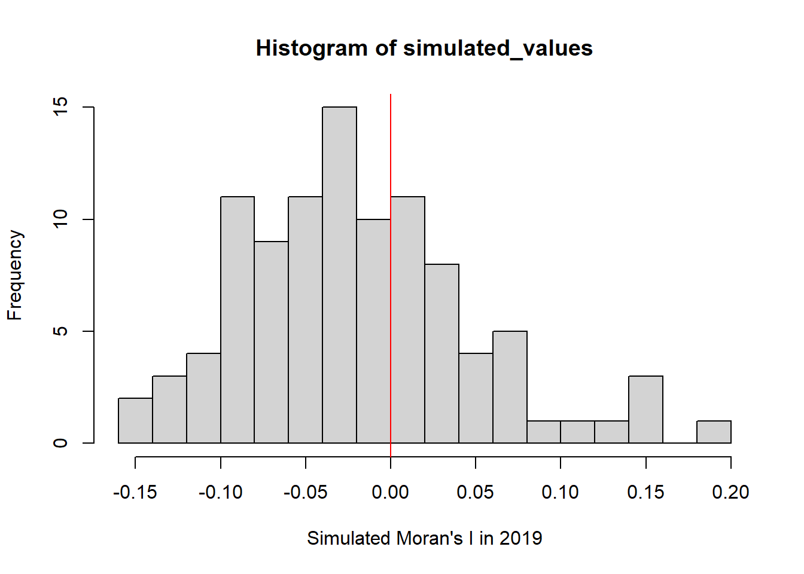
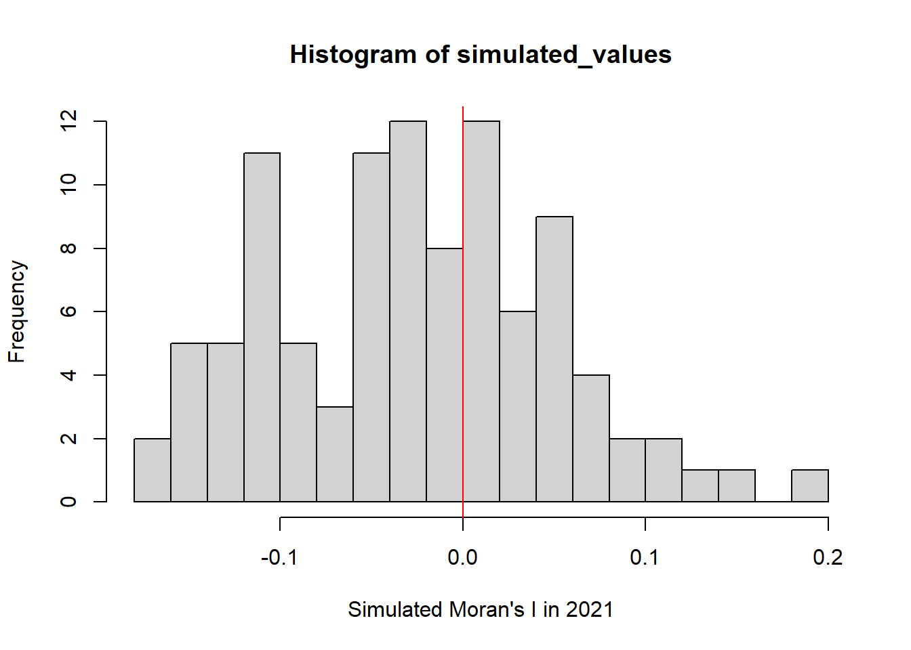
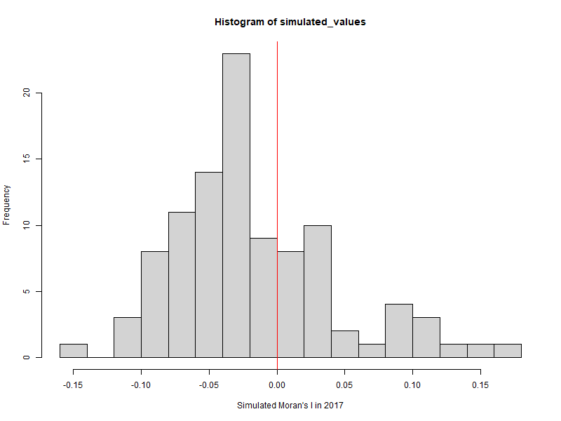

pacman::p_load(tidyverse, sf, readr, ggplot2, tmap, dplyr, arrow, sfdep, scales, animation, png, magick, patchwork)Take-home Exercise 2: Application of Geospatial Analysis Methods to Discover Thailand Drug Abuse at the Province Level
Introduction
Drug Abuse Overview
Global Impact: Drug abuse has severe health, financial, and social consequences.
Prevalence: In 2021, 1 in 17 people aged 15–64 worldwide used a drug in the past year.
Growth Trend: Drug users increased from 240 million in 2011 to 296 million in 2021.
Drug Situation in Thailand
Geopolitical Context: Proximity to the Golden Triangle, a major drug production area, makes Thailand a key market and transit route for drug trafficking.
Youth Drug Abuse:
Approximately 2.7 million young people in Thailand use drugs.
Around 300,000 youth aged 15-19 need drug treatment.
Vocational students are nearly twice as involved with drugs compared to secondary-school students.

This Geospatial Analytics will Focus on:
- Objective: Determine if drug abuse indicators in Thailand show spatial dependence.
- Analysis Goals:
Identify clusters, outliers, and hotspots of drug abuse.
Examine how these patterns change over time.
1.0 Setup
1.1 Installing R-Packages
sf:For handling spatial vector data and transforming it into simple features (
sf) objects.Functions like
st_read()for importing spatial data andst_transform()for coordinate reference system transformations.
tidyverse: For data manipulation and transformation, including functions for working withtibbledata frames.readr: For reading in CSV or other text-based data files if needed.dplyr: provide data manipulation capabilities (eg. to group and summarize the relationships between these columns)arrow: To read parquet files
tmap: For creating thematic maps and displaying KDE layers.ggplot2: For additional custom visualizations if needed.scales: Transform the unit of measurement for coordinateanimation, png, magick: For animation work
sfdep: For performing both local and global spatial autocorrelation analysis
1.2 Data Acquisition
We will be using 2 sets of data:
Study Period: 2017-2022
- Source: Thailand - Subnational Administrative Boundaries at HDX.
- Province Boundaries: For understanding conflict distribution across larger administrative divisions.
1.3 Importing Geospatial Data into R
drug_offenses_df <- read_parquet("data/drug_offense/thai_drug_offenses_2017_2022.parquet")drug_offenses <- read_csv("data/drug_offense/thai_drug_offenses_2017_2022.csv")Rows: 7392 Columns: 5
── Column specification ────────────────────────────────────────────────────────
Delimiter: ","
chr (3): types_of_drug_offenses, province_th, province_en
dbl (2): fiscal_year, no_cases
ℹ Use `spec()` to retrieve the full column specification for this data.
ℹ Specify the column types or set `show_col_types = FALSE` to quiet this message.
Note
Since the data in CSV and Parquet formats are identical, we only need to import one of these file types.
province_boundaries <- st_read(dsn = "data/subnational_administrative_boundary", layer="tha_admbnda_adm1_rtsd_20220121")Reading layer `tha_admbnda_adm1_rtsd_20220121' from data source
`C:\Users\ngkng\Desktop\School\Geo -Local\Take-home_Ex\Take-home_Ex02\data\subnational_administrative_boundary'
using driver `ESRI Shapefile'
Simple feature collection with 77 features and 16 fields
Geometry type: MULTIPOLYGON
Dimension: XY
Bounding box: xmin: 97.34336 ymin: 5.613038 xmax: 105.637 ymax: 20.46507
Geodetic CRS: WGS 841.4 Checking Geospatial Data
class(drug_offenses)[1] "spec_tbl_df" "tbl_df" "tbl" "data.frame"
Note
Since
- Since the class of drug_offenses != sf object
we have to transform it.
class(province_boundaries)[1] "sf" "data.frame"st_crs(province_boundaries)Coordinate Reference System:
User input: WGS 84
wkt:
GEOGCRS["WGS 84",
DATUM["World Geodetic System 1984",
ELLIPSOID["WGS 84",6378137,298.257223563,
LENGTHUNIT["metre",1]]],
PRIMEM["Greenwich",0,
ANGLEUNIT["degree",0.0174532925199433]],
CS[ellipsoidal,2],
AXIS["latitude",north,
ORDER[1],
ANGLEUNIT["degree",0.0174532925199433]],
AXIS["longitude",east,
ORDER[2],
ANGLEUNIT["degree",0.0174532925199433]],
ID["EPSG",4326]]
Note
Since Coordinate Reference System of province_boundaries
is in 4326 (unit of measurement = degree), we have to transform it
1.6 Data Preparation and Wrangling
# Drop & Rename column
drug_offenses <- drug_offenses %>%
select(fiscal_year, types_of_drug_offenses, no_cases, province_en) %>%
rename(
year = fiscal_year,
offense_type = types_of_drug_offenses,
case_count = no_cases,
province_name = province_en
)Transform the Coordinate Reference System of these:
province_boundaries <- province_boundaries %>%
st_transform(crs = 4240)# Drop & Rename column
province_boundaries <- province_boundaries %>%
select(Shape_Leng, Shape_Area, ADM1_EN, ADM1_PCODE, geometry) %>%
rename(
province_name = ADM1_EN,
province_code = ADM1_PCODE
)Sample plot
ggplot(data = province_boundaries) +
geom_sf() +
theme_minimal() +
labs(title = "Map of Geometries",
subtitle = "Displaying multipolygon geometries",
caption = "Source: Example Data")# Filter for unmatched province_names between Drug Offenses & Province Boundaries data set
unmatched_provinces <- drug_offenses %>%
left_join(province_boundaries, by = "province_name") %>%
filter(is.na(Shape_Leng)) %>%
select(province_name)
unmatched_provinces <- unique(unmatched_provinces) #Loburi, buogkan
# Transform the province_name in the Drug Offenses dataset
drug_offenses <- drug_offenses %>%
mutate(province_name = case_when(
province_name == "Loburi" ~ "Lop Buri",
province_name == "buogkan" ~ "Bueng Kan",
TRUE ~ province_name # Keep the original name if no match
))
# Assign each drug offense to a province
drug_offenses_by_province <- drug_offenses %>%
left_join(province_boundaries, by = "province_name")
# Check for any empty attributes in the test dataset
empty_attributes <- sapply(drug_offenses_by_province, function(column) any(is.na(column)))
# Identify columns with missing values
missing_columns <- names(empty_attributes[empty_attributes]) # character(0) = No missing Column
Warning
The Drug Offenses dataset has some naming issues with province_name.
We found two discrepancies: Loburi should be changed to Lop Buri, and buogkan should be updated to Bueng Kan to match the Province Boundaries dataset.
We will update the province_name entries in the Drug Offenses dataset accordingly.s
2.0 Understanding the Data
offense_type <- unique(drug_offenses_by_province$offense_type)
print(offense_type) [1] "drug_use_cases"
[2] "suspects_in_drug_use_cases"
[3] "possession_cases"
[4] "suspects_in_possession_cases"
[5] "possession_with_intent_to_distribute_cases"
[6] "suspects_in_possession_with_intent_to_distribute_cases"
[7] "trafficking_cases"
[8] "suspects_in_trafficking_cases"
[9] "production_cases"
[10] "suspects_in_production_cases"
[11] "import_cases"
[12] "suspects_in_import_cases"
[13] "export_cases"
[14] "suspects_in_export_cases"
[15] "conspiracy_cases"
[16] "suspects_in_conspiracy_cases"
Note
These varying degrees of offense types may reveal patterns and trends in drug-related activities, providing a comprehensive understanding of the issue at hand.
3.0 Exploratory Data Analysis
Summary statistics
summary_stats <- drug_offenses_by_province %>%
group_by(province_name, year) %>%
summarise(
total_cases = sum(case_count, na.rm = TRUE),
geometry = first(geometry)
)`summarise()` has grouped output by 'province_name'. You can override using the
`.groups` argument.summary_stats# A tibble: 462 × 4
# Groups: province_name [77]
province_name year total_cases geometry
<chr> <dbl> <dbl> <MULTIPOLYGON [°]>
1 Amnat Charoen 2017 5076 (((104.9654 16.28154, 104.9654 16.28148, 104…
2 Amnat Charoen 2018 5651 (((104.9654 16.28154, 104.9654 16.28148, 104…
3 Amnat Charoen 2019 7339 (((104.9654 16.28154, 104.9654 16.28148, 104…
4 Amnat Charoen 2020 3949 (((104.9654 16.28154, 104.9654 16.28148, 104…
5 Amnat Charoen 2021 8961 (((104.9654 16.28154, 104.9654 16.28148, 104…
6 Amnat Charoen 2022 4459 (((104.9654 16.28154, 104.9654 16.28148, 104…
7 Ang Thong 2017 1614 (((100.3381 14.79649, 100.3384 14.79607, 100…
8 Ang Thong 2018 2717 (((100.3381 14.79649, 100.3384 14.79607, 100…
9 Ang Thong 2019 2781 (((100.3381 14.79649, 100.3384 14.79607, 100…
10 Ang Thong 2020 2636 (((100.3381 14.79649, 100.3384 14.79607, 100…
# ℹ 452 more rowsTrends over time for the entire country
drug_trends <- drug_offenses_by_province %>%
group_by(year) %>%
summarise(total_cases = sum(case_count))
# Plot trend over time with formatted y-axis labels
ggplot(drug_trends, aes(x = year, y = total_cases)) +
geom_line(color = "blue") +
geom_point(size = 3, color = "red") + # Optional: Add points for better visibility
labs(title = "Drug Abuse Cases Over Time",
x = "Year", y = "Total Cases") +
scale_y_continuous(labels = comma)
4.0 Global Spatial Autocorrelation Analysis
Organize into years for more detailed analysis:
summary_stats <- st_as_sf(summary_stats)
summary_stats_2017 <- summary_stats %>%
filter(year == 2017) %>%
ungroup() # Remove any grouping
summary_stats_2018 <- summary_stats %>%
filter(year == 2018) %>%
ungroup() # Remove any grouping
summary_stats_2019 <- summary_stats %>%
filter(year == 2019) %>%
ungroup() # Remove any grouping
summary_stats_2020 <- summary_stats %>%
filter(year == 2020) %>%
ungroup() # Remove any grouping
summary_stats_2021 <- summary_stats %>%
filter(year == 2021) %>%
ungroup() # Remove any grouping
summary_stats_2022 <- summary_stats %>%
filter(year == 2022) %>%
ungroup() # Remove any groupingDeriving Queen’s Contiguity weights: sfdep methods
nb <- st_contiguity(summary_stats_2017$geometry)
wt <- st_weights(nb, style = "W", allow_zero = TRUE)
wm_q_2017 <- summary_stats_2017 %>%
mutate(
nb = nb,
wt = wt,
.before = 1
)
wm_q_2018 <- summary_stats_2018 %>%
mutate(
nb = nb,
wt = wt,
.before = 1
)
wm_q_2019 <- summary_stats_2019 %>%
mutate(
nb = nb,
wt = wt,
.before = 1
)
wm_q_2020 <- summary_stats_2020 %>%
mutate(
nb = nb,
wt = wt,
.before = 1
)
wm_q_2021 <- summary_stats_2021 %>%
mutate(
nb = nb,
wt = wt,
.before = 1
)
wm_q_2022 <- summary_stats_2022 %>%
mutate(
nb = nb,
wt = wt,
.before = 1
)
Note
To derive spatial autocorrelation, we first gather the relevant geographic points for our study area:
Filtering for Unique Geographic Points: The
summary_statsdataset contains multiple entries for each geographic point across different years. We filter it to retain data for a single year (e.g., 2017) to work with a unique set of locations.Identifying Neighbors: To assess the spatial relationships between areas, we identify neighboring regions. We use Queen’s contiguity weights, which include all neighbors that touch at edges or corners, capturing comprehensive spatial interactions.
Calculating Weights: After identifying neighbors, we calculate spatial weights that quantify the influence neighboring areas have on one another. These weights are crucial for measuring spatial autocorrelation, as they inform how a variable in one area relates to values in its neighbors.
2017: An Initial Overview
Global Moran’ I
moranI_2017 <- global_moran(wm_q_2017$total_cases,
wm_q_2017$nb,
wm_q_2017$wt)Warning in lag.listw(listw, z, zero.policy = zero.policy, NAOK = NAOK): NAs in
lagged valuesglimpse(moranI_2017)List of 2
$ I: num NA
$ K: num 31.4global_moran_test(wm_q_2017$total_cases,
wm_q_2017$nb,
wm_q_2017$wt,
zero.policy = TRUE)
Moran I test under randomisation
data: x
weights: listw
n reduced by no-neighbour observations
Moran I statistic standard deviate = 2.4598, p-value = 0.006951
alternative hypothesis: greater
sample estimates:
Moran I statistic Expectation Variance
0.133140650 -0.013333333 0.003545946
Note
Moran I statistic (0.133140650) -> indicates a positive correlation in the variable of interest (e.g., total cases).
SD of 2.4598 -> suggests that Moran’s I is greater than the expected value under the null hypothesis.
P-value of 0.006951 -> is < 0.05, indicating strong statistical significance.
Expectation of -0.013333333 -> suggests we would expect slight negative autocorrelation if there were no spatial structure.
Since the p-value < 0.05, we reject the null hypothesis of no spatial autocorrelation. This strongly suggests there is significant positive spatial clustering of the variable in the study area (regions with high values are near areas with high values).
set.seed(1234)
global_moran_perm_result_2017 <- global_moran_perm(wm_q_2017$total_cases,
wm_q_2017$nb,
wm_q_2017$wt,
zero.policy = TRUE,
nsim = 99)
global_moran_perm_result_2017
Monte-Carlo simulation of Moran I
data: x
weights: listw
number of simulations + 1: 100
statistic = 0.13314, observed rank = 98, p-value = 0.04
alternative hypothesis: two.sidedsummary(global_moran_perm_result_2017$res) Min. 1st Qu. Median Mean 3rd Qu. Max.
-0.151935 -0.056539 -0.030537 -0.018749 0.008258 0.162326 png("data/rds/global_moran_perm_result_2017.png", width = 800, height = 600)
# Extract the simulated statistics and observed statistic
simulated_values <- global_moran_perm_result_2017$res
# To capture
hist(simulated_values,
freq=TRUE,
breaks=20,
xlab="Simulated Moran's I in 2017")
abline(v=0,
col="red")
# Close the graphic device
dev.off()png
2 # To Show
hist(simulated_values,
freq=TRUE,
breaks=20,
xlab="Simulated Moran's I in 2017")
abline(v=0,
col="red") 
Note
To ensure our results are accurate, we’ll perform a Monte Carlo (permutation) test on Moran’s I statistic. This method helps us understand if the observed clustering of values is statistically significant.
First, we set the seed using set.seed(1234). This step is crucial because it guarantees that our simulation results will be reproducible. Every time we run the simulation, we should get the same outcomes, which is important for consistency in our analysis.
Now, looking at the results from our permutation test:
Moran’s I statistic: 0.13314
Observed rank: 98
P-value: 0.04
The p-value being less than 0.05 tells us that there’s strong statistical evidence against the null hypothesis of no spatial autocorrelation. This means we can conclude there’s significant positive spatial clustering in our data—areas with high values are near other areas with high values.
Looking at the summary of the simulated statistics, with the maximum being 0.162326 and the minimum at -0.151935. The distribution of these values helps us understand the expected behavior of our statistic under the null hypothesis.
Note
It’s important to note that some areas may have no neighboring regions, which results in null weights. To address this, we use zero.policy = TRUE in our analysis, allowing regions with no neighbors to be included without causing errors in calculations.
However, it’s essential to understand that Global Moran’s I does not accommodate regions without neighbors in its calculations, meaning that these regions, even when included, will not contribute to the overall assessment of spatial autocorrelation.
Consequently, regions with null weights may still affect the results, leading to potential skewing of the analysis and limiting its interpretability. Therefore, careful consideration of how to handle such regions is crucial for ensuring accurate spatial analysis.
Visualising across time span (2017-2022)
Performing Global Moran’s I permutation test (Monte Carlo)
set.seed(1234)
global_moran_perm_result_2018 <- global_moran_perm(wm_q_2018$total_cases,
wm_q_2018$nb,
wm_q_2018$wt,
zero.policy = TRUE,
nsim = 99)
global_moran_perm_result_2018
Monte-Carlo simulation of Moran I
data: x
weights: listw
number of simulations + 1: 100
statistic = 0.11637, observed rank = 96, p-value = 0.08
alternative hypothesis: two.sidedsummary(global_moran_perm_result_2018$res) Min. 1st Qu. Median Mean 3rd Qu. Max.
-0.13864 -0.06366 -0.02856 -0.01870 0.02001 0.17737 png("data/rds/global_moran_perm_result_2018.png", width = 800, height = 600)
# Extract the simulated statistics and observed statistic
simulated_values <- global_moran_perm_result_2018$res
# To capture
hist(simulated_values,
freq=TRUE,
breaks=20,
xlab="Simulated Moran's I in 2018")
abline(v=0,
col="red")
# Close the graphic device
dev.off()png
2 # To show
hist(simulated_values,
freq=TRUE,
breaks=20,
xlab="Simulated Moran's I in 2018")
abline(v=0,
col="red") 
Performing Global Moran’s I permutation test (Monte Carlo)
set.seed(1234)
global_moran_perm_result_2019 <- global_moran_perm(wm_q_2019$total_cases,
wm_q_2019$nb,
wm_q_2019$wt,
zero.policy = TRUE,
nsim = 99)
global_moran_perm_result_2019
Monte-Carlo simulation of Moran I
data: x
weights: listw
number of simulations + 1: 100
statistic = 0.15541, observed rank = 98, p-value = 0.04
alternative hypothesis: two.sidedsummary(global_moran_perm_result_2019$res) Min. 1st Qu. Median Mean 3rd Qu. Max.
-0.14482 -0.06808 -0.02675 -0.01963 0.01235 0.19844 # Extract the simulated statistics and observed statistic
simulated_values <- global_moran_perm_result_2019$res
png("data/rds/global_moran_perm_result_2019.png", width = 800, height = 600)
# To plot
hist(simulated_values,
freq=TRUE,
breaks=20,
xlab="Simulated Moran's I in 2019")
abline(v=0,
col="red")
# Close the graphic device
dev.off()png
2 # To show
hist(simulated_values,
freq=TRUE,
breaks=20,
xlab="Simulated Moran's I in 2019")
abline(v=0,
col="red") 
Performing Global Moran’s I permutation test (Monte Carlo)
set.seed(1234)
global_moran_perm_result_2020 <- global_moran_perm(wm_q_2020$total_cases,
wm_q_2020$nb,
wm_q_2020$wt,
zero.policy = TRUE,
nsim = 99)
global_moran_perm_result_2020
Monte-Carlo simulation of Moran I
data: x
weights: listw
number of simulations + 1: 100
statistic = 0.1296, observed rank = 97, p-value = 0.06
alternative hypothesis: two.sidedsummary(global_moran_perm_result_2020$res) Min. 1st Qu. Median Mean 3rd Qu. Max.
-0.152560 -0.076142 -0.031856 -0.026822 0.006521 0.194366 # Extract the simulated statistics and observed statistic
simulated_values <- global_moran_perm_result_2020$res
png("data/rds/global_moran_perm_result_2020.png", width = 800, height = 600)
# To capture
hist(simulated_values,
freq=TRUE,
breaks=20,
xlab="Simulated Moran's I in 2020")
abline(v=0,
col="red")
# Close the graphic device
dev.off()png
2 # To show
hist(simulated_values,
freq=TRUE,
breaks=20,
xlab="Simulated Moran's I in 2020")
abline(v=0,
col="red")Performing Global Moran’s I permutation test (Monte Carlo)
set.seed(1234)
global_moran_perm_result_2021 <- global_moran_perm(wm_q_2021$total_cases,
wm_q_2021$nb,
wm_q_2021$wt,
zero.policy = TRUE,
nsim = 99)
global_moran_perm_result_2021
Monte-Carlo simulation of Moran I
data: x
weights: listw
number of simulations + 1: 100
statistic = 0.19889, observed rank = 100, p-value < 2.2e-16
alternative hypothesis: two.sidedsummary(global_moran_perm_result_2021$res) Min. 1st Qu. Median Mean 3rd Qu. Max.
-0.17499 -0.08997 -0.02457 -0.02653 0.02894 0.19889 # Extract the simulated statistics and observed statistic
simulated_values <- global_moran_perm_result_2021$res
png("data/rds/global_moran_perm_result_2021.png", width = 800, height = 600)
# To capture
hist(simulated_values,
freq=TRUE,
breaks=20,
xlab="Simulated Moran's I in 2021")
abline(v=0,
col="red")
# Close the graphic device
dev.off()png
2 # To show
hist(simulated_values,
freq=TRUE,
breaks=20,
xlab="Simulated Moran's I in 2021")
abline(v=0,
col="red") 
Performing Global Moran’s I permutation test (Monte Carlo)
set.seed(1234)
global_moran_perm_result_2022 <- global_moran_perm(wm_q_2022$total_cases,
wm_q_2022$nb,
wm_q_2022$wt,
zero.policy = TRUE,
nsim = 99)
global_moran_perm_result_2022
Monte-Carlo simulation of Moran I
data: x
weights: listw
number of simulations + 1: 100
statistic = 0.20113, observed rank = 100, p-value < 2.2e-16
alternative hypothesis: two.sidedsummary(global_moran_perm_result_2022$res) Min. 1st Qu. Median Mean 3rd Qu. Max.
-0.17928 -0.09257 -0.03519 -0.02521 0.03933 0.20113 # Extract the simulated statistics and observed statistic
simulated_values <- global_moran_perm_result_2022$res
png("data/rds/global_moran_perm_result_2022.png", width = 800, height = 600)
# To capture
hist(simulated_values,
freq=TRUE,
breaks=20,
xlab="Simulated Moran's I in 2022")
abline(v=0,
col="red")
# Close the graphic device
dev.off()png
2 # To show
hist(simulated_values,
freq=TRUE,
breaks=20,
xlab="Simulated Moran's I in 2022")
abline(v=0,
col="red")
Note
The results indicate a general trend of positive spatial autocorrelation from 2017 to 2022, with significant clustering observed in 2021 and 2022.
The years 2017, 2019, 2021, and 2022 show statistically significant evidence of clustering, while 2018 and 2020 have lower evidence of spatial correlation.
This trend suggests that the variable of interest tends to cluster in certain areas, particularly from 2021 onwards, which may warrant further investigation into the factors driving this clustering.
# Specify the directory containing the images
image_directory <- "data/rds/"
# Get a list of image files in the specified directory
global_moran_perm_result_files <- list.files(image_directory, pattern = "\\.png$", full.names = TRUE)
# Load saved images and combine them into an animated GIF
global_moran_images <- lapply(global_moran_perm_result_files, image_read)
# Create an animation from the Global Moran's images
global_moran_animation <- image_animate(image_join(global_moran_images), fps = 1)
# Define the path for the GIF animation
global_moran_gif_path <- "data/rds/global_moran_animation.gif"
# Save the animation as a GIF file
image_write(global_moran_animation, path = global_moran_gif_path)
# Print confirmation that the GIF was saved
print("Global Moran's animation saved as spatio_temporal_global_moran_animation.gif")[1] "Global Moran's animation saved as spatio_temporal_global_moran_animation.gif"# Display the GIF using magick
global_moran_gif_image <- image_read(global_moran_gif_path)
print(global_moran_gif_image)# A tibble: 6 × 7
format width height colorspace matte filesize density
<chr> <int> <int> <chr> <lgl> <int> <chr>
1 GIF 800 600 sRGB FALSE 0 72x72
2 GIF 800 600 sRGB FALSE 0 72x72
3 GIF 800 600 sRGB FALSE 0 72x72
4 GIF 800 600 sRGB FALSE 0 72x72
5 GIF 800 600 sRGB FALSE 0 72x72
6 GIF 800 600 sRGB FALSE 0 72x72 